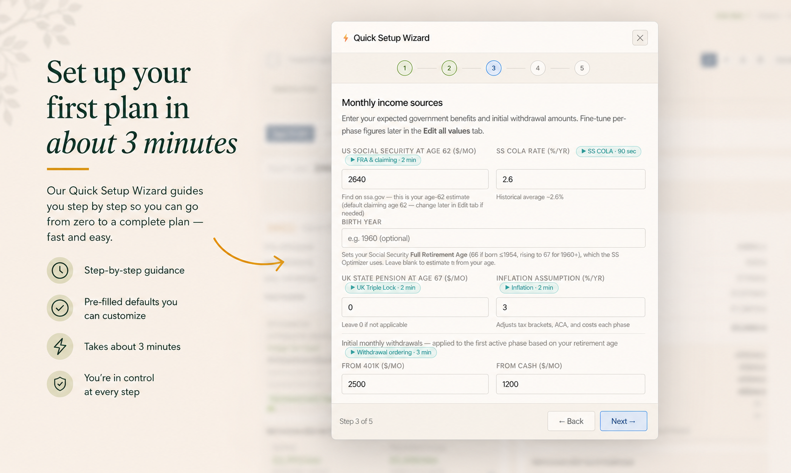
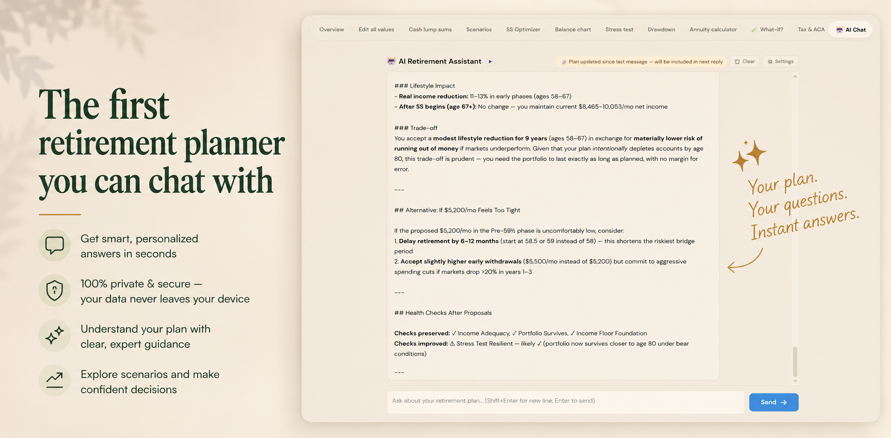

Home › How It Works
From setup to sign‑offHow it works
No installation, no account. Open the file, follow the wizard, and you’ll have a real, stress‑tested retirement plan in an afternoon — often much less.
Set up your first plan in about 3 minutes
On first open, three guided aids welcome you: the Quick Setup Wizard takes you step by step from zero to a complete plan, a Concepts Primer explains the essentials (MAGI, FRA, the ACA cliff, RMDs), and a Feature Tour shows you around. All three open automatically for newcomers — and you can relaunch any of them from Help whenever you like.
- Wizard, Concepts Primer & Feature Tour, auto‑opened on first visit
- Pre‑filled defaults you can change
- Relaunch any guide from Help at any time

See your retirement, phase by phase
Your plan appears as a clear five‑phase timeline. Each phase shows withdrawals by account, gross income, taxes, healthcare costs and the net income you’d actually receive — in both today’s money and future dollars.
- Per‑account withdrawals & balances
- Taxes & healthcare estimated for every phase
- Net income shown nominal and inflation‑adjusted

Ask the AI co‑pilot in plain English optional
Open the Plan‑with‑AI sidebar and just ask. It proposes specific numeric changes, runs them through the planner’s own simulator, and shows the verified outcome — so you can accept improvements with confidence.
- Personalised answers in seconds
- Every proposal simulated & verified
- You approve before anything changes
- Entirely optional — runs on your own Anthropic API key; every other part of the planner works fully without it

Stress‑test and explore the what‑ifs
Run Monte Carlo and historical backtests, compare claiming ages, model the survivor’s income, and explore what‑ifs for inflation, Roth conversions and maximum sustainable spending — all before you commit.
- Hundreds of market scenarios, not one forecast
- Social Security & survivor planning
- What‑if explorer for every big lever
- Experiment freely — autosave and undo/redo mean nothing’s lost

Sign off, export and review
When you’re happy, mark the plan Signed off — the planner snapshots your numbers and sets a 12‑month review reminder. Export a multi‑page PDF to keep or share, or a JSON file to back up and re‑import later.
- Draft → Under review → Signed off
- Multi‑page PDF report
- JSON backup you fully own

Video tutorials
Prefer to watch? A full playlist walks you through the planner, feature by feature.
 Watch the tutorial ›
Watch the tutorial ›
 ▶
▶ ▶
▶ ▶
▶ ▶
▶ ▶
▶ ▶
▶ ▶
▶ ▶
▶ ▶
▶ ▶
▶ ▶
▶ ▶
▶